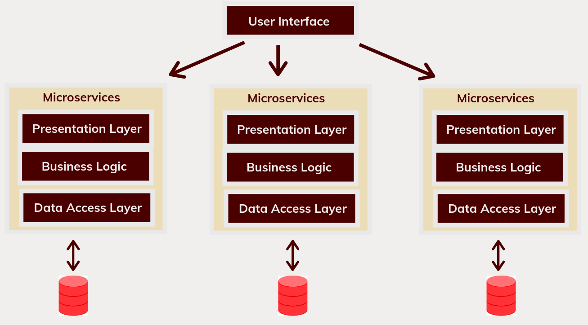
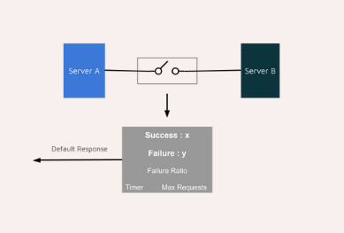
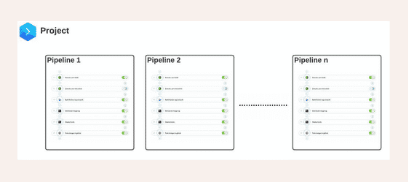
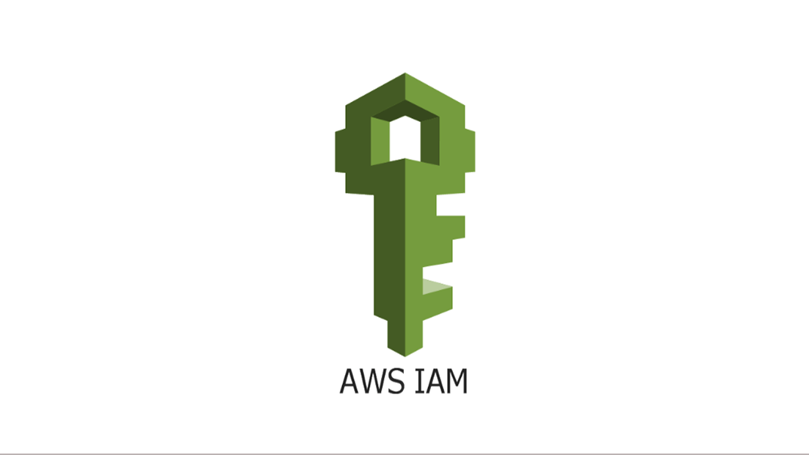
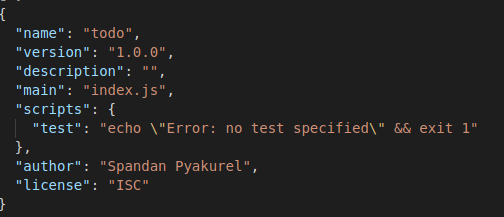

Spandan
Pyakurel
Home
Portfolio
Blog
Blog

Architecture
The first step in understanding Microservice Architecture

microservices
How is the Circuit Breaker Pattern implemented in Microservice Architecture?

CI/CD
Understanding Buddy for CI/CD

AWS
Takeaways from AWS IAM

Node
Build REST APIs using Express and MongoDB